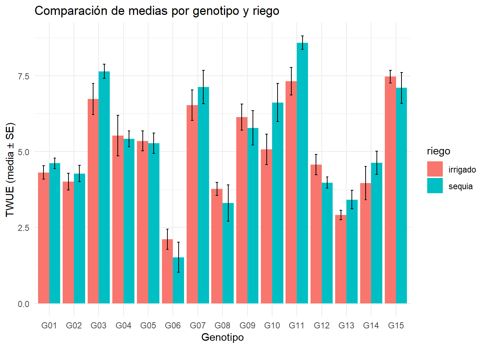
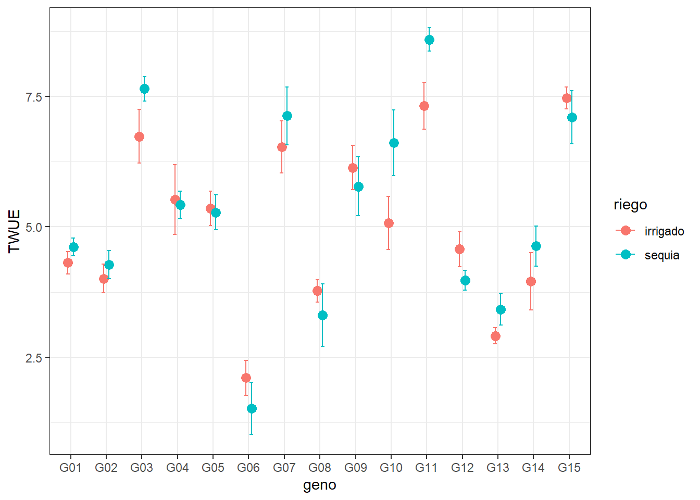
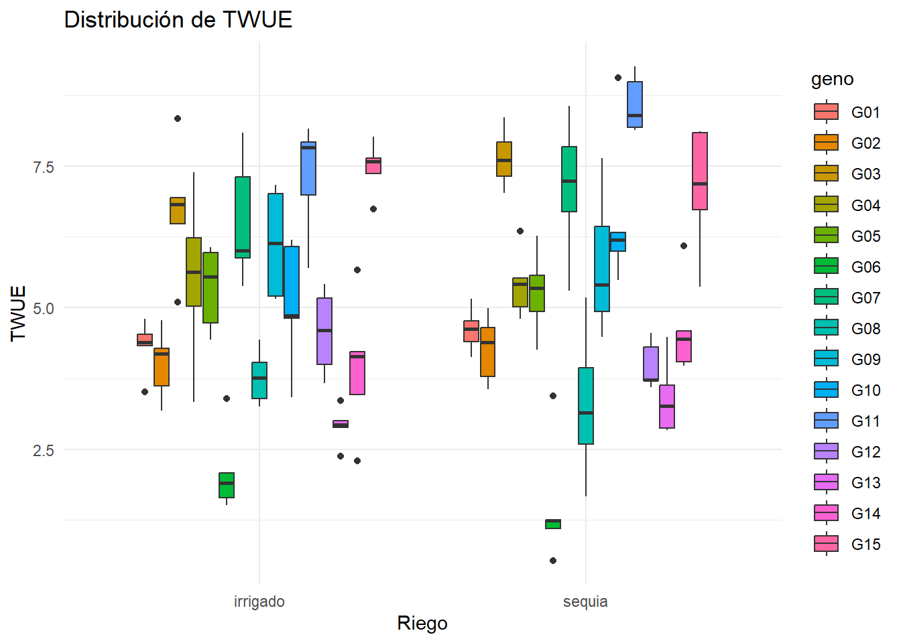
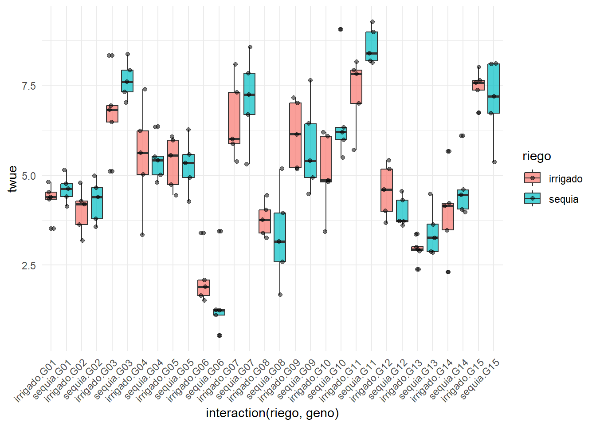

── Attaching core tidyverse packages ──────────────────────── tidyverse 2.0.0 ──
✔ dplyr 1.1.4 ✔ readr 2.1.5
✔ forcats 1.0.1 ✔ stringr 1.5.2
✔ ggplot2 4.0.0 ✔ tibble 3.3.0
✔ lubridate 1.9.4 ✔ tidyr 1.3.1
✔ purrr 1.1.0
── Conflicts ────────────────────────────────────────── tidyverse_conflicts() ──
✖ dplyr::filter() masks stats::filter()
✖ dplyr::lag() masks stats::lag()
ℹ Use the conflicted package (<http://conflicted.r-lib.org/>) to force all conflicts to become errors
library(googlesheets4)library(lme4)
Cargando paquete requerido: Matrix
Adjuntando el paquete: 'Matrix'
The following objects are masked from 'package:tidyr':
expand, pack, unpack
library(emmeans)
Welcome to emmeans.
Caution: You lose important information if you filter this package's results.
See '? untidy'
library(car)
Cargando paquete requerido: carData
Adjuntando el paquete: 'car'
The following object is masked from 'package:dplyr':
recode
The following object is masked from 'package:purrr':
some
Rows: 150 Columns: 18
── Column specification ────────────────────────────────────────────────────────
Delimiter: ","
chr (3): riego, geno, bloque
dbl (15): block, spad_29, spad_83, rwc_84, op_84, leafdw, stemdw, rootdw, tu...
ℹ Use `spec()` to retrieve the full column specification for this data.
ℹ Specify the column types or set `show_col_types = FALSE` to quiet this message.
# Solo por un factorPOTATO %>%group_by(riego) %>%summarise(media =mean(twue),sd =sd(twue),n =n() )
# A tibble: 2 × 4
riego media sd n
<chr> <dbl> <dbl> <int>
1 irrigado 5.05 1.75 75
2 sequia 5.28 2.02 75
# Calcular estadísticasresumen <- POTATO %>%group_by(riego, geno) %>%summarise(media =mean(twue),se =sd(twue) /sqrt(n()),.groups ="drop" )# Gráfico de barrasggplot(resumen, aes(x = geno, y = media, fill = riego)) +geom_col(position =position_dodge()) +geom_errorbar(aes(ymin = media - se, ymax = media + se),width =0.2,position =position_dodge(0.9)) +theme_minimal() +labs(title ="Comparación de medias por genotipo y riego",x ="Genotipo",y ="TWUE (media ± SE)")

# Gráfico de puntos con ICggplot(resumen, aes(x = geno, y = media, color = riego)) +geom_point(size =3, position =position_dodge(0.3)) +geom_errorbar(aes(ymin = media - se, ymax = media + se),width =0.2,position =position_dodge(0.3)) +theme_bw() +labs(y ="TWUE")

Boxplot o gráfico
POTATO %>%ggplot(aes(x = riego, y = twue, fill = geno)) +geom_boxplot() +theme_minimal() +labs(title ="Distribución de TWUE",x ="Riego",y ="TWUE")

# Con puntos individualesPOTATO %>%ggplot(aes(x =interaction(riego, geno), y = twue, fill = riego)) +geom_boxplot(alpha =0.7) +geom_jitter(width =0.2, alpha =0.5) +theme_minimal() +theme(axis.text.x =element_text(angle =45, hjust =1))

# Verificar si hay datos suficientesPOTATO %>%filter(geno =="G1") %>%group_by(riego) %>%summarise(n =n())
# A tibble: 0 × 2
# ℹ 2 variables: riego <chr>, n <int>
# Cambiar el genotipo si "G1" no existePOTATO %>%count(geno) # Ver qué genotipos existen